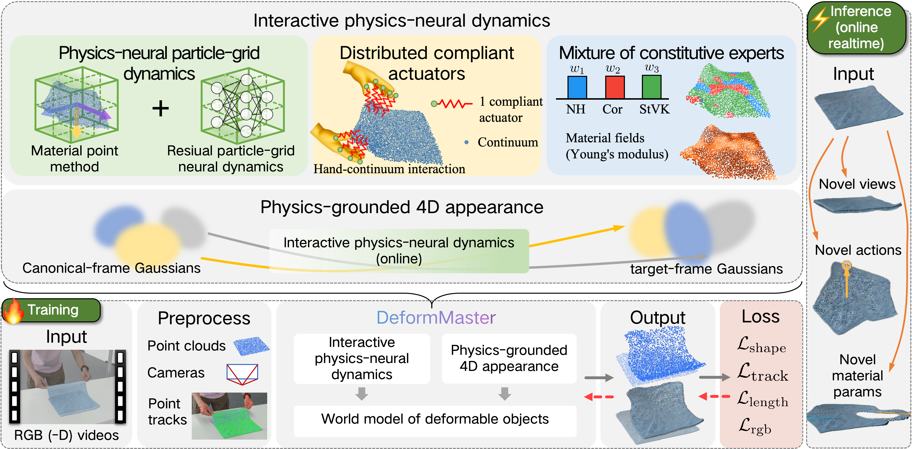

World models for deformable objects should recover not only geometry and appearance, but also underlying physical dynamics, interaction grounding, and material behavior. Learning such a model from real videos is challenging because deformable linear, planar, and volumetric objects evolve under high-dimensional deformation, noisy interactions, and complex material response. The model must therefore infer a physical state from visual observations, roll it forward under new interactions, and render the resulting dynamics with high visual fidelity.
We present DeformMaster, a video-derived interactive physics-neural world model that turns real interaction videos into an online interactive model of deformable objects within a unified dynamics-and-appearance framework. DeformMaster preserves structured physical rollout while using a neural residual to compensate for unmodeled effects, grounds sparse hand motion as distributed compliant actuators for hand-continuum interaction, represents material response with spatially varying constitutive experts, and drives high-fidelity 4D appearance from the predicted physical evolution. Experiments on real-world deformable-object sequences demonstrate DeformMaster's ability to roll out future dynamics and render dynamic appearance, outperforming state-of-the-art baselines while supporting novel action rollout, material-parameter variation, and dynamic novel-view synthesis.

DeformMaster learns a deformable-object world model from interaction videos by coupling interactive physics-neural dynamics with physics-grounded appearance. It integrates four components for stable dynamics rollout, robust hand-continuum interaction, heterogeneous material response, and high-fidelity rendering:
We evaluate DeformMaster on real-world deformable-object sequences spanning linear (ropes), planar (cloths, packages), and volumetric (softbodied toys) objects.
Action-conditioned rollouts of DeformMaster on the deformable objects (from PhysTwin). Foreground: prediction; background: ground truth.
double_lift_cloth_1
double_lift_cloth_3
double_lift_sloth
double_lift_zebra
double_stretch_sloth
double_stretch_zebra
single_clift_cloth_1
single_clift_cloth_3
single_lift_cloth
single_lift_cloth_1
single_lift_cloth_3
single_lift_cloth_4
single_lift_dinosor
single_lift_rope
single_lift_sloth
single_lift_zebra
single_push_rope
single_push_rope_1
single_push_sloth
weird_package
Side-by-side comparisons between a baseline and DeformMaster on representative deformable-object sequences.
double_lift_zebra
double_lift_zebra
double_lift_sloth
double_lift_sloth
Per-category dynamics prediction on the PhysTwin sequences (n=20), grouped into deformable linear, planar, and volumetric objects.
| Method | Linear (n=3) | Planar (n=9) | Volumetric (n=8) | ||||||
|---|---|---|---|---|---|---|---|---|---|
| IoU ↑ | Chamfer ↓ | Track ↓ | IoU ↑ | Chamfer ↓ | Track ↓ | IoU ↑ | Chamfer ↓ | Track ↓ | |
| PhysTwin | 0.658 | 0.007 | 0.013 | 0.738 | 0.013 | 0.028 | 0.748 | 0.013 | 0.021 |
| DeformMaster (ours) | 0.721 | 0.005 | 0.010 | 0.748 | 0.013 | 0.032 | 0.756 | 0.012 | 0.020 |
More quantitative results, qualitative results, ablations, and an interactive online playground will be released here.
This work was done during an internship at Rightly Robotics, A4X. We thank the authors of PhysTwin, PGND, and 3D Gaussian Splatting.
@article{li2026deformmaster,
title={DeformMaster: An Interactive Physics-Neural World Model for Deformable Objects from Videos},
author={Can Li and Zhoujian Li and Ren Li and Jie Gu and Lei Lei and Jingmin Chen and Lei Sun},
year={2026},
eprint={2605.09586},
archivePrefix={arXiv},
primaryClass={cs.CV},
url={https://arxiv.org/abs/2605.09586},
}